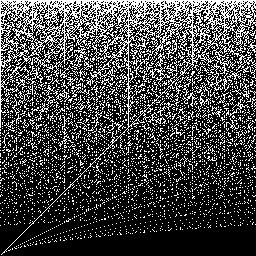
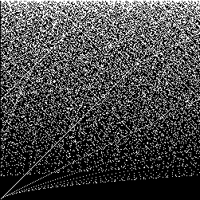
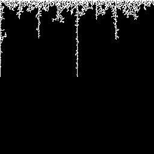
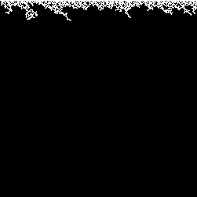
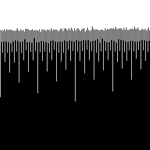
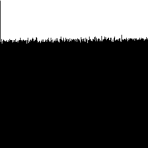
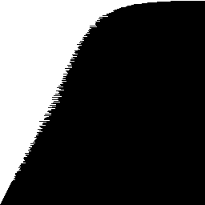
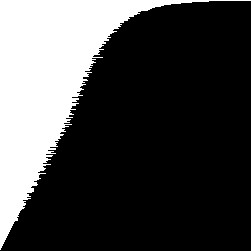

HXY Images
HXY images are mathematical images. I discovered them around 2020.
Software
- hxy - write an HXY image to a PNG file
This program is part of misk.
Definition
For an HXY image with width w and height h, in pixels, w, h ∈ ℕ ∖ {0},
let X = {x ∈ ℕ ∣ x < w}, Y = {y ∈ ℕ ∣ y < h}, and P = {x ⋅ y ∣ x ∈ X, y ∈ Y}.
Number the pixels of the image 0, 1, … from top to bottom and left to right.
A pixel is white if its number is in P, otherwise it is black.
Example
For the HXY image with width w = 3 and height h = 2, the sets defined above become
- X = {0, 1, 2}
- Y = {0, 1}
- P = {0 ⋅ 0, 0 ⋅ 1, 1 ⋅ 0, 1 ⋅ 1, 2 ⋅ 0, 2 ⋅ 1} = {0, 1, 2}
The pixels of the image are numbered as follows:
and colored as follows:
| White | White | White
|
| Black | Black | Black
|
Pixel 0 is white because its number is in P. Pixel 3 is black because its number is not in P.
Observations
- The top row of an HXY image is white if
- its width and height are equal to 1 or
- its height is greater than 1.
- Flood-filling the top row reveals a special shape.
Gallery
The images here were written using hxy.
Figure 1. The square HXY images with side lengths 256 and 251.


Figure 2. The special shapes of Figure 1.


Figure 3. The horizontal projections of Figure 1.


Figure 4. The vertical projections of Figure 1.


To see the relationship between Figure 1 and Figure 2, do the following in GIMP (or do its equivalent in another graphics program):
- Copy and paste (or save and open) an image from Figure 1.
- Use Tools → Paint Tools → Bucket Fill to flood-fill the top row with a color other than black or white.
- Use Select → By Color to select all white pixels, then use Colors → Colorize to color them black.